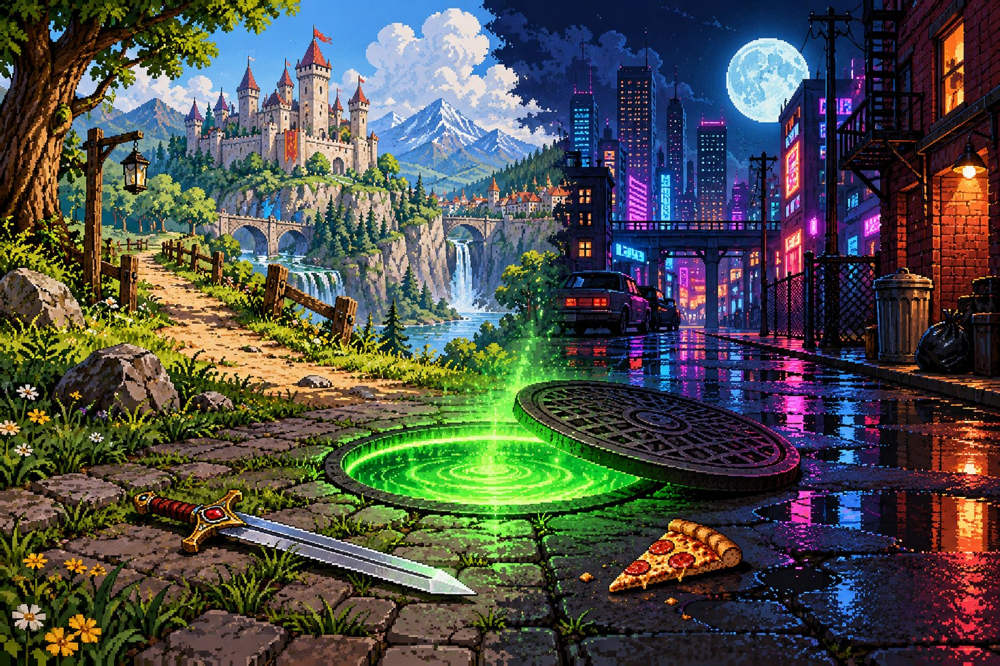
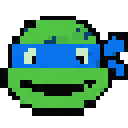
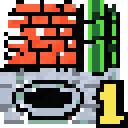
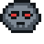
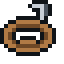
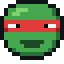
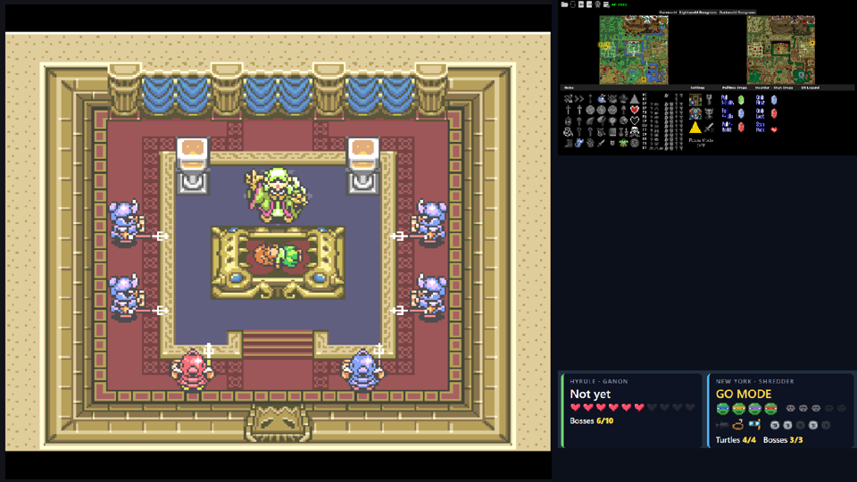
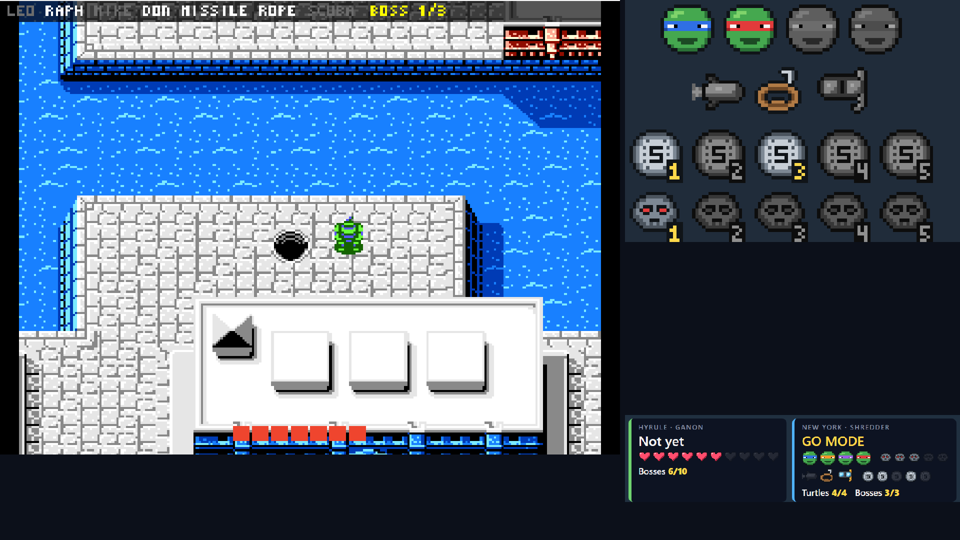

TMNT × A Link to the Past
An Archipelago randomizer created by Mogswe
Link finds turtles in Hyrule's chests, the turtles find Moon Pearls in New York's sewers. The run is over when both Ganon and Shredder are beaten.
How the two games connect

Turtles are itemsYou start with one turtle. The other three are captured until you find them, usually in Hyrule.

Areas are dungeonsEach TMNT Area opens with its Sewer Pass (and sometimes a tool). You pick the Area from an in-game menu.

Bosses hold Hyrule's itemsTMNT's bosses, sewer entrances and two gifts in the Turtle Lair hold A Link to the Past items.
Two goals
Ganon in Hyrule and Shredder in the Technodrome. The seed is done when both are down.
Start here

1. SetupDouble-click install.cmd, point it to your two ROMs; it installs everything else.

2. PlayDouble-click start.cmd: create a seed, start and check the session, stop it. Plus the rules of
the TMNT side.
 3. Stream
3. Stream
OBS scene collection, go mode panel, trackers and the pizza-wipe transition.
4. Help
Known problems and what to do when something does not connect.
What you see on stream


Status
| Part | State |
|---|---|
| Logic, generation (150 seeds), ROM patch | Done and tested |
| BizHawk client, area menu, HUD, item messages | Done, tested end to end with a local server |
| Full ALttP + TMNT chain (SNI, both clients, PopTracker, panel) | Connects and syncs; not played through yet |
| OBS scene collection and stinger | Loads in OBS 32; the scene switch itself not tried live |
| start.cmd menu, game swap, item notices, save safety, check before going live | Done; a whole session started, checked ("All set") and stopped through the menu, with OBS 32.2.2 following every swap |
| A full rehearsal run of a seed | Still to do |